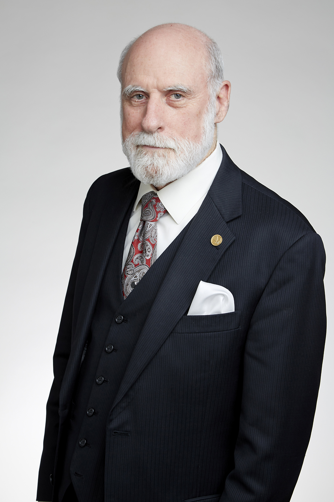

Vannevar Bush was an American engineer born on March 11, 1890. He joined the department of Electrical Engineering at Massachusetts Institute of Technology in 1919 and became the vice president of MIT and dean of MIT School of Engineering in 1932. During the course of his career, Bush invented and patnted a variety of works. He is particularly known for his work on analog computers and memex.
Douglas Engelbart
Douglas Carl Engelbart founded the field of Human Computer Interaction(HCI) at Augmentation Research Center Lab in SRI International. During the course of his career, he discovered the computer mouse and served as a stepping stone for hypertext developement, networked computers, and Graphical User Interfaces.
Ted Nelson
Theodor Holm Nelson born on June 17, 1937 was the son of Emmy-Award winning director Ralph Nelson and Academy Award winning actress Celeste Holm. He is an American pioneer of information technology who coined the term hypertext and hypermedia when he presented the paper "Complex Information Processing: A File Structure for the Complex, the Changing, and the Indeterminate" in 1965. In 1960, Nelson founded Project Xanadu with the aim of creating a computer network operating on a simple user interface.
Steve Jobs
Steve Jobs born on February 24, 1955 was an American business magnate and investor. He was the CEO and co-founder of Apple Inc, a major share holder of Pixar, a member of The Walt Disney Company's board of directors and the founder, chairman and CEO of NeXT.
Tim Berners Lee
Tim Berners Lee born on June 8, 1955 is a computer scientist who is considered to be the inventor of the World Wide Web. He was the first person to implement successful communication between a HyperText Transfer Protocol(HTTP) client and a server via the Internet. He is the director of World Wide Web Consortium(W3C) that manages and governs the continued developement of the Web.
Marc Andreessen
Marc Andreessen born on July 9, 1971 is an American entrepreneur and software engineer who co-founde Mosaic the first widely used graphical web browser. He also co-founded Netscape which was ruling the World Wide Web for a period of time during those days. He sits on the board of directors of Hewlett Packard Enterprise, Facebook, ebay among many others.
Rob Hartill
Rob hartill born on January 30, 1969 is a computer programmer and web designer. He is primarily known for his works in Internet Movie Database Website(IMDB) and the Apache web server. He made many early contributions to the Apache HTTP server. He is also one of the only six inductees in the World Wide Web Hall of Fame announced at the first interntation conference on the World Wide Web. He is currently a volunteer fire-fighter with the Country Fire Service in South Australia.
Lou Montulli
Louis J. Montulli II is a programmer known for co-authoring a text web browser called Lynx while he was at the University of Kansas. He prgrammed networking code for the primary versions of Netscape browser. Innovations of HTTP cookies, blink element, server push, client pull, HTTP proxying are attributed to him. Montulli also build Fishcam, one of the earliest live image websites. He was involved in creating the very first HTML interface that was incorporated into Netscape Navigator 2.0.
Vint Cerf
Vint Cerf born on June 23, 1943 is recognized as one of the fathers of the Internet. He was acknowledge with several degrees and awards such as National Medal of Technology, Turing Award, Presidential Medal of Freedom, Marconi Prize among many others for his contributions. He funded the formation of ICANN and eventually joined the board after a year and became the chairman.

Bob Khan
Robert Elliot Kahn born on December 23, 1938 is an American electrical engineer who invented the Transmission Control Protocol(TCP) along with Vint Cerf. He also co-founded the Internet Society with Vint Cerf which was aimed at providing leadership in internet related standards. He has received a large number of awards such as SIGCOMM award in 1993, National Medal of Technology in 1997, Turing Award in 2004, ACM Software Systems Award among many others. He was also inducted into the National Inventors Hall of Fame.